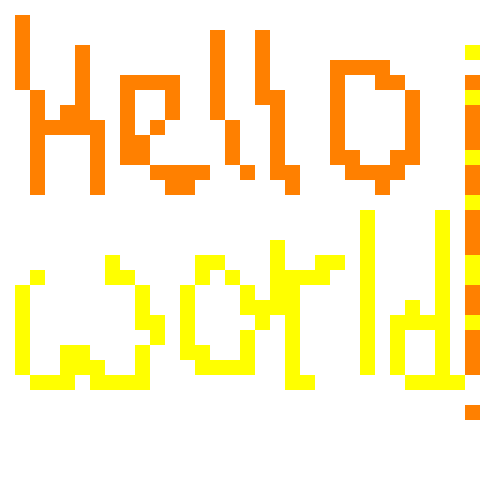
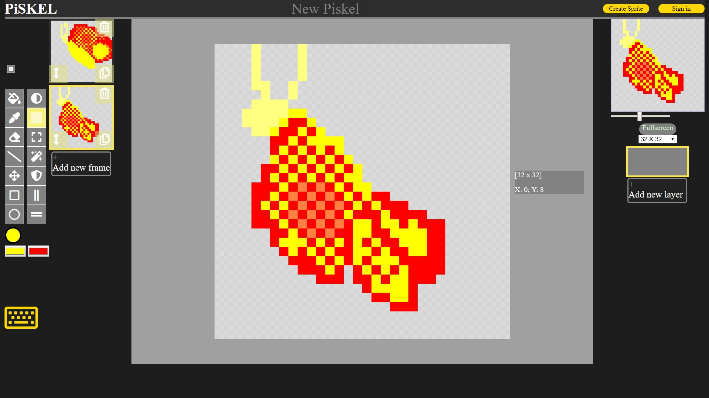
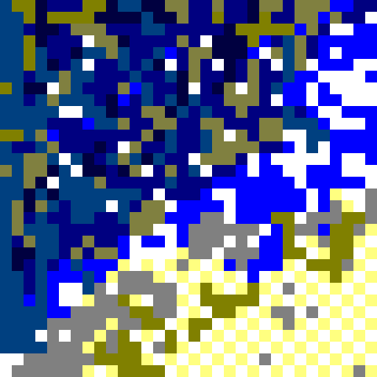
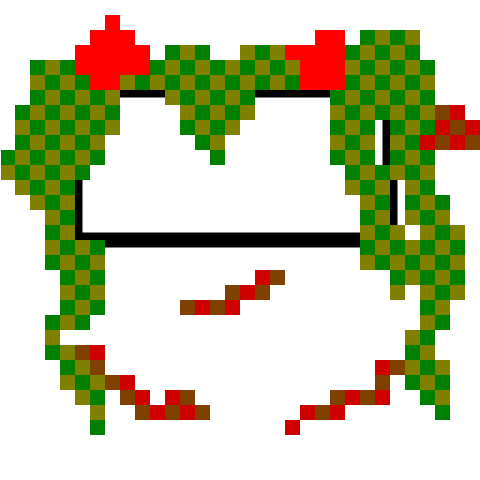
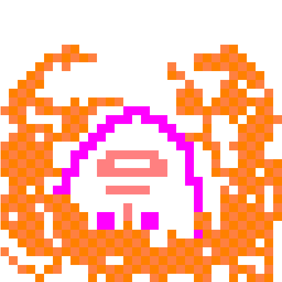
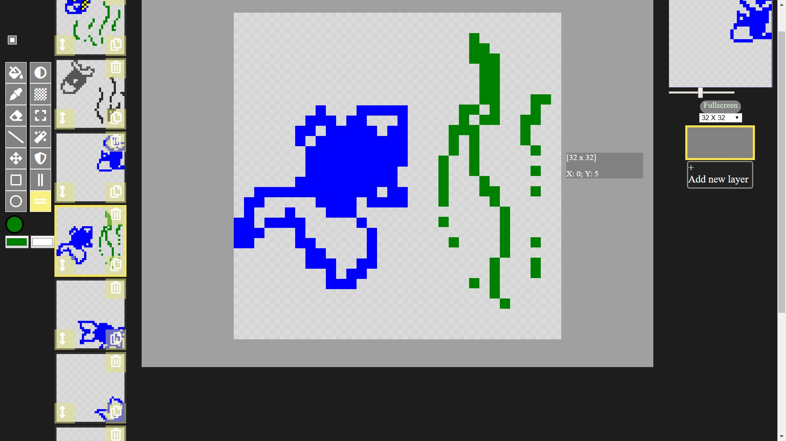
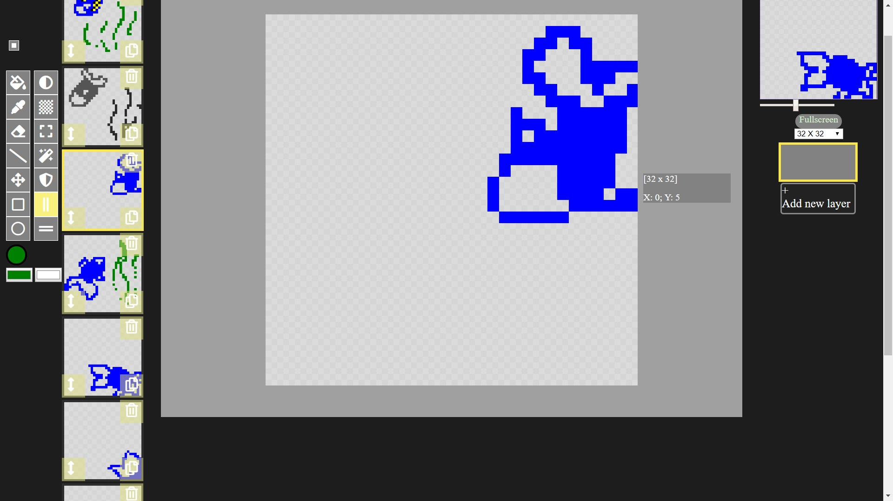
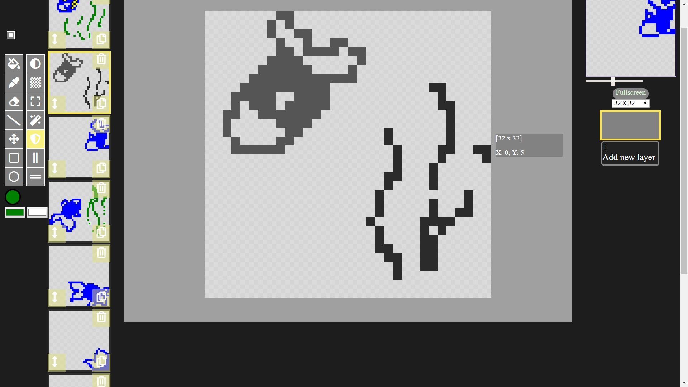
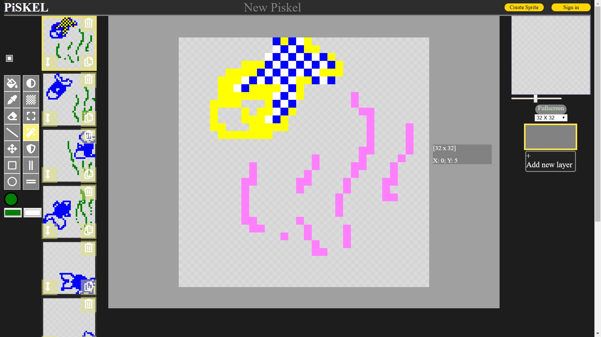

Piskel is a free online editor for animated sprites & pixel art

You can use various of tools to create animations. The result is shown on the preview

You can use a pen and a dithering tool to find yourself on a pixelated sea

...or with help of several lines have a rest on a balcony

Flip vertically tool makes a world upside down

Different ways to manipulate images: flip, grayscale, invert



